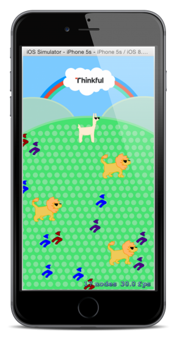

Jerry Dunn's Github Pages Blog
Random posts related to stuff I'm working on.
Thinkful Swift Training Course - Unit 1 and 2
I started my Swift training using Thinkful today. The ability to focus on training for a full day at a time is extremely helpful and I am grateful for this! It cuts out many distractions and allows me to really focus and absorb the information. I have decided to blog about the traning here and put all of the apps built during the training into my Github account for reference later on if needed.
Having gone through some other Swift training and Xcode development efforts prior to this, I was able to breeze through Lessons 1 and 2. These covered the basics such as installing Xcode, data types, functions, classes, etc.
Lesson 3 introduced some features for using Swift as a gaming environment. I had to finish a game app named "Llamas-in-Pajamas". Most of the development was already completed and the assignment was to add some features, build and run it.
Below is a screen shot of the app. 
The completed app can be found in a repository on my github account here: github.com/gdunnjr/Llamas-in-Pajamas-Assignment
Unit 2 of the course covers objects, classes, inheritiance, overriding and structures. Again I had seem most of this before in my previous efforts to learn Swift. It was good to re-inforce what I had learned before though but I was able to go through the training fairly quickly. Some new things I learned included use of shapes and some graphics library methods. Unit 2 ended with an assignment to complete a partially coded FibonacciSequence App. There were bugs puprossely put into the completed code and I had to find and fix them as part of the excercise. Basic troubleshooting and debugging methods in xCode were covered.
Below is a screenshot from the FibonacciSequence App.
The completed app can be found here: github.com/gdunnjr/Fibonacci-Sequence-Assignment-App.git
Thinkful Swift Training Course - Unit 3
On Weds of this week I met with my Thinkful mentor. I did not have many questions, but I did show him an app I was working on and he gave me some good feedback.
Today I worked through most of Unit 3 of the training. Unit 3 is focused on building apps. It covers critical components of the user interface, including buttons, sliders, navigation controllers, and textfields. It also goes more in depth into troubleshooting and debugging. In addition, Xcode version control integration with GiHub was also covered. There were several code "challenges" along the way where you are given a question or a piece of code to build on your own and then review it in the following section.
The first app in section 3 is RGB Sliders. This app re-inforeced some of the things learned earlier. A screen shot is below.
The RGB Sliders app can be found here: github.com/gdunnjr/RGB-Sliders.git
The last part of Unit 3 covered advanced de-bugging in X-code, something that can be difficult to work through. Through a series of de-bugging "challenges" I got exprience using the X-code de-bugging tools to find and fix bugs purposely embedded in a project downloaded from Githhub. I found this to be very useful.
Thinkful Swift Training Course - Unit 4
Today I finished the last piece of Unit 3 and worked through Unit 4 of the training. Unit 4 covers additional topics around building applications. It covers table views, navigation, calling web services, and how to utilize Third Party Objective-C Frameworks in Swift projects.
The first app is a simple Contacts app similar to Apples contacts app. There was a challenge to build as much as the app on my own first. I was able build the entire app and just got stuck on a couple things. This excercise helped me learn about navigation and table views and how to share data across views. Below is a screenshot from the contacts app that I built.
The completed Contacts app can be found here: github.com/gdunnjr/Contacts-Assignment-App.git
The second app in Unit 4 introduce the AFNetworking library and covered how to make network calls and consume JSON. AFNetorking makes web service calls very easy by wrapping a lot of the necessary ios calls you would normally have to make. I found this app fairly straightforward, since I had already done some work on my own in Swift, learning how to make network calls the "hard way" and working through JSON parsing on my own. The app I wrote for this was an app that connects to a facebook page and retrieves data from it. It then parses the JSON. This code for this app can be found here: github.com/gdunnjr/WebService-Example-Assignment-App.git
The final app in Unit 4 was an app that consumes Instagram's API. I had to create a developer account with Instagram and write an app that would go out and search for photo's by keyword and then render them in a scrolling table. This app covered how to make calls asynchronously to increase performance.
Below is a screen shot from my app.My instagram app can be found in Github here: github.com/gdunnjr/PhotoSearchExample.git
I also met with my Thinkful mentor to review the materials covered in the last unit. I had some questions for him and we also talked about the capstone project. I am going to build a product locator app. So the first step is to create a list of features for the application. I created a google doc with the features and we reviewed it. This is the first time I've used Google Docs and I was impressed. It was easy to use and the collaborations features are great. I emailed it to my manager, Jason, and he was able to make comments in real time which I could see.
The next step in the capstone project process is to create a wire frame of the app. I am currently working on that using an app named BluePrint. Below is link to the google doc with the features.
Jerry's Swift Training Capstone Project Functional SpecsBelow is screen shot of the wire frame I've put together so far using BluePrint. I'll be working on this more later in the week and on Friday.